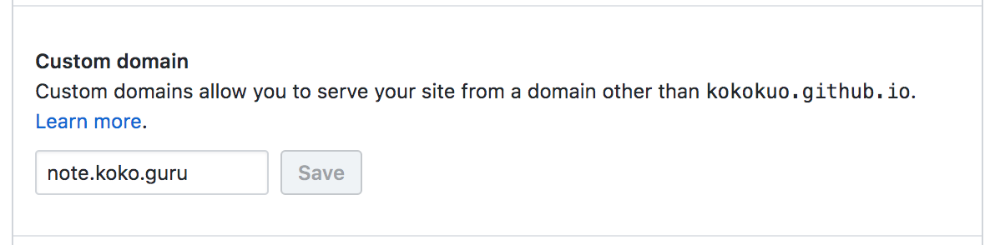
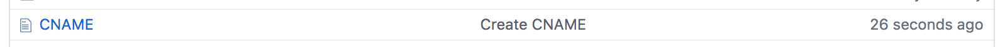
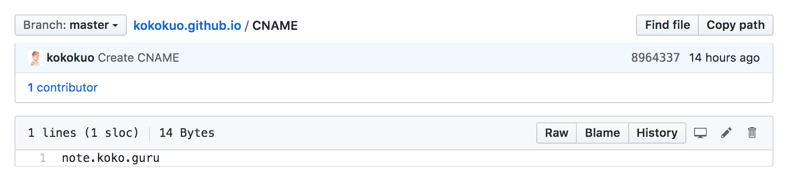
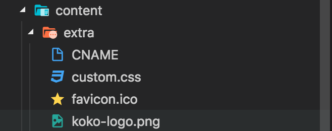
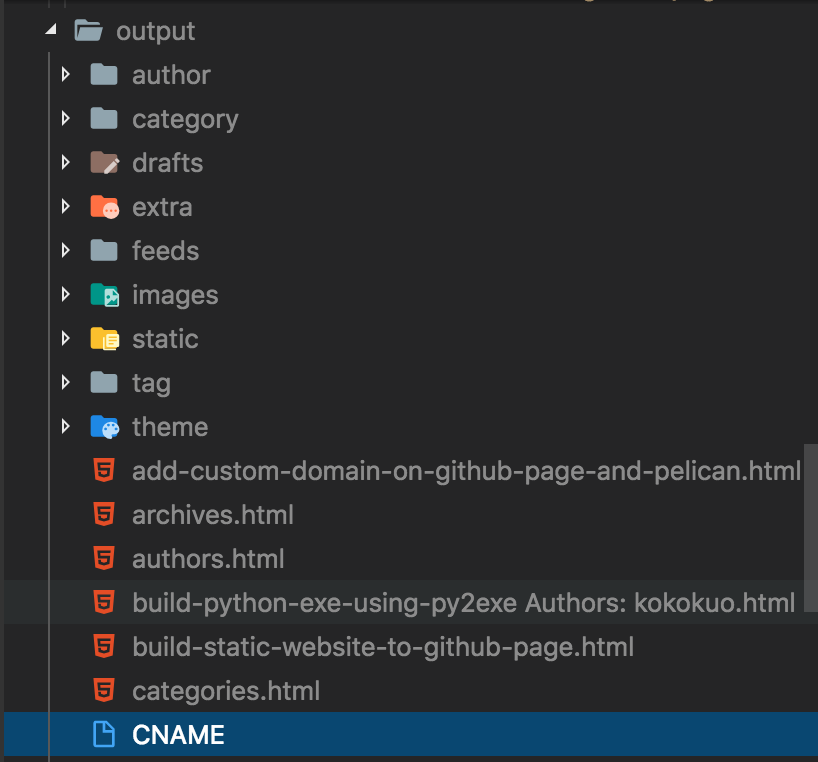
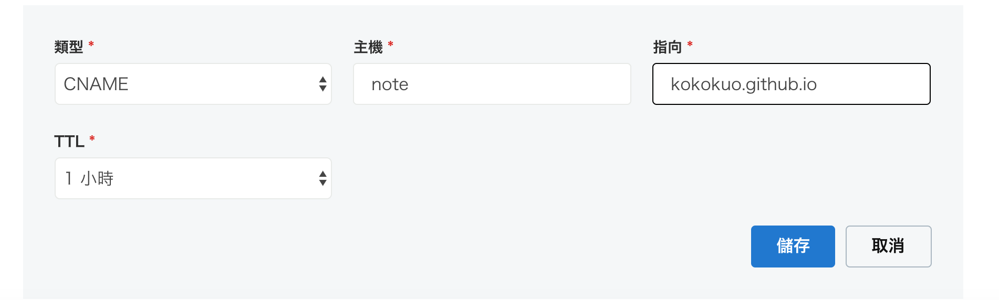
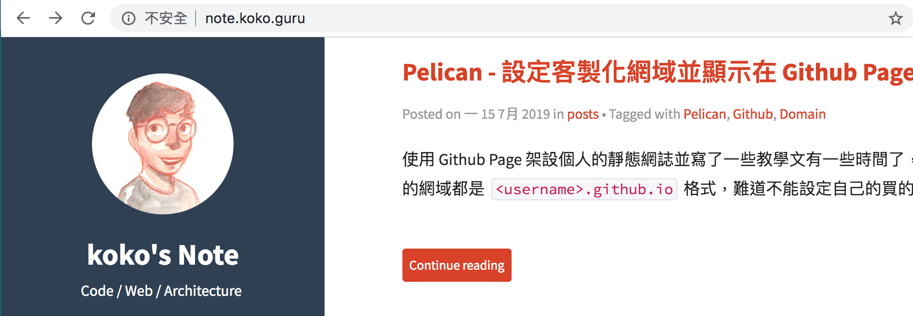
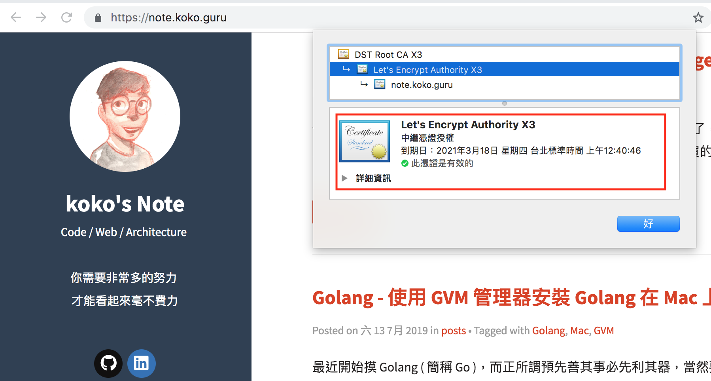

Pelican - 設定客製化網域並顯示在 Github Page 上
Posted on Mon 15 July 2019 in posts
前言
使用 Github Page 架設個人的靜態網誌並寫了一些教學文有一些時間了，但是 Github Page 所架設的網誌，所使用的網域都是 <username>.github.io 格式，難道不能設定自己的買的網域嗎？ 那接著我們就來看看這篇吧！
一、設置化網域設定
1. 購買想要的域名
購買網域名稱這部分，在網路上有諸多的服務可以購買，如國產中華電信，全球較知名的網路註冊商 Godaddy,、NameCheap、Gandi.net，或是熟知的幾大雲端服務也會提供，如 AWS Route53、Google Domain、Azure，甚至一些比較小眾或是特別網域才買得到註冊商，像是本人用過 Registr.TO ... 等等，都能購買。
不過因為網路上有太多的相關文章介紹與分享，所以這邊就直接跳過此段。且由於我本人比較常用也熟悉 GoDaddy 的服務，所以接下來的設定為以 GoDaddy 為例，如果有想要了解的部分也可以在聯繫我，我會嘗試為你解答。
我從 GoDaddy 購買了 koko.guru 這個網域，接下來我將要設定子網域 note.koko.guru 來作為我 Github Page 的客製化網域。
如果沒聽過子網域的話可以看 GoDaddy 這篇介紹
2. 在 Github Page 填上想要的客製化網域
接著打開我們的 Github Page Repository，點擊右上角的 Settings，找到 GitHub Pages 區塊的 Custom Domain，並輸入要加入的客製化網域，如我在這裡輸入 note.koko.guru 並按下 Save。

接著當你再次回到 Repository 下的時候就會看到 CNAME 出現在 master 分支中：

點擊 CNAME 檔案觀看時會發現該檔案其實很單純，只是打上的我們在 GitHub Pages 區塊的 Custom Domain 所填寫的 note.koko.guru 內容而已。

上述這種方式雖然很簡單，但是透過 Github 的 Custom Domain Settings 是只有一次性的建立 CNAME 而已。
若未來我們的網誌更新，再次藉由 Pelican 提供的 make github 推版上去 master 的 Repository 時，就會被整個覆蓋掉，所以這並不是長久之計。
因此我們最好的方式是在 Pelican 的靜態網站每次更新並推版到 master 時把這個 CNAME 也放在裡面部署上去，以下來介紹如何透過 Pelican 產生。
3. 透過 Pelican 產生 CNAME 檔案
在 Pelican 中，我們一樣要先建立這個 CNAME 的檔案，並且藉由先前在 Pelican - 常用參數設定介紹與功能設定 與 Pelican - 如何客製化 Pelican Theme 的 Flex 樣式 文中提到的 EXTRA_PATH_METADATA 與 STATIC_PATHS ，先把自己製作的 CNAME 檔案放到 extra 目錄下：

接著設定 EXTRA_PATH_METADATA 與 STATIC_PATHS，使 CNAME 輸出時放到 output 根目錄下：
# 設定哪些目錄或檔案，要被視為靜態文件，並且放置到輸出目錄下
STATIC_PATHS = [
"images",
"extra"
]
# 用來設定複製到輸出目錄時，該 extra/CNAME 會被投放對應的位置，這邊設定在 根目錄
EXTRA_PATH_METADATA = {
"extra/CNAME": {"path": "CNAME"},
"extra/README": {"path": "README.md"},
"extra/favicon.ico": {"path": "static/favicon.ico"},
"extra/custom.css": {"path": "static/custom.css"},
"extra/koko-logo.png": {"path": "static/koko-logo.png"},
}
最後透過 make html 輸出成 HTML 到 output 時也被放 output 根目錄下：

看到檔案後再執行 make github 推到 Github Page 即可。
但是到這一步還不夠，因為我們從網域註冊商購買的網域還沒有指向這裡，所以接著我們要在網域註冊商設定才行。
4. 設定網域註冊商的 CNAME 指向 Github Page
「網域註冊商」一般都會有基本的託管功能，也就是管理你過買的域名要指向哪個 IP 位置、或採用 CNAME ( 別名指向 ）、設置要讓網域給別的服務商託管、有沒有子網域設置...等等。
因為本篇不是介紹 DNS 以及設定 DNS 使用的不同種類紀錄方式，所以如果要了解可以先從 Google 的這篇認識 DNS 基本資訊
由於先前在前面的文章中，我是使用 GoDaddy 的服務，因此接下來會在 GoDaddy 中對我所購買的 koko.guru 設定子網域 note.koko.guru 並採用 CNAME 的方式指向我在 Github Page 所建立的靜態網誌 kokokuo.github.io ，如下圖是設定的部分：

按下儲存後，未來每當我輸入 http://note.koko.guru 便會指向我在 https://kokokuo.github.io。
另外因為我在 Github Page 中有設定 Custom Domain 為 http://note.koko.guru，因此當我輸入 https://kokokuo.github.io 網址時跳轉到 http://note.koko.guru。
接著再藉由 GoDaddy 設定 CNAME 的關係Ｍ所以指向我在 Github Page 架構的 Pelican 靜態網誌，同時網址也會顯示 http://note.koko.guru，如下圖：

二、設定 HTTPS
但是在上圖中你會發現原本使用 HTTPS 的 https://kokokuo.github.io SSL 安全傳輸加密協議的 Github Page 在設定成 Custom Domain 後便失效了。
這個原因是因為原本的 Github Page 網址 - https://kokokuo.github.io 是由 Github 提供的。
因為都歸類在 github.io 這個網域底下，所以 Github 可以比較容易的提供安全的 SSL 傳輸協議，例如只要購買萬用 SSL 憑證，便可以把 github.io 這個網域下的第一層子網域都可以看見 HTTPS。
如果沒聽過萬用 SSL 憑證的話，可以看一下 GoDaddy 官方對萬用憑證的介紹。
而剛好的因為我們 Github Page 使用時的網址格式 - <username>.github.io 都是第一層子網域，所以也可能對比上。
因此以前的話我們可能需要自己購買 SSL 協議，或是透過 CloudFlare 來託管我們的網域，在藉由 CloudFlare 加裝 SSL 協議來達成 ( 即便這段協議是 DNS 系統到 CloudFlare 這段，對於 CloudFlare 至 Github 這段還是沒有安全協議但依然可以有一層保護 ) 。
但是因為後來有 Let's Encrypt 這個服務，可以幫助我們自動生成簡易且免費的 SSL 協議，因此 Github 也提供了這個功能到 Github Page 的 Custom Domain 裡面。
再次點擊自己的 Github Page 的 Repository，並點右上角的 Settings ，移動到 Github Pages 區塊並勾選 Enforce HTTPS ，看到打勾的符號後稍微等一下後，再次輸入網址便可以看到 HTTPS 哦！
例如我的 https://note.koko.guru，你會看到鎖頭，以及 Let's Encrypt 頒發的憑證。

後記
雖然在 Github 官方的文件中有提到設定客製化網域的方式不只有 CNAME 這一種，也可以使用 A 紀錄，但在設定上會稍微繁瑣一些，所以目前主要以 CNAME 為大眾。
另外如果有人好奇為何沒有綠色鎖頭的話，那是因為 Google 官方在 2018 年 9 月後對於新版的 Chrome 都拔掉綠鎖頭的圖示了，所以如果你的 Chrome 有在更新沒看到也是很正常的，想知道這件事可以Google 官方部落格介紹。
那麼到這裡 Github Page 相關的設定也告一段落了，除了 Pelican 有逐漸補強會寫一些文章外，其餘會回到技術上的文章正軌，也會花一些時間把舊的兩個網誌也併過來。